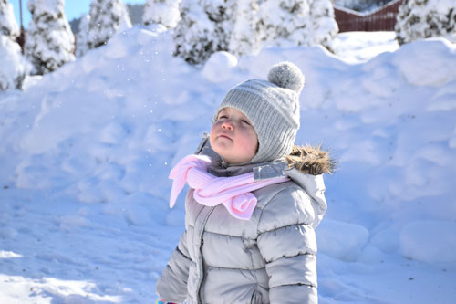

Snow Fun for Kids!
Jane Smith
Oh, to be a child again! To find joy in the newness of each day and be in awe of what lies waiting to be discovered. As researchers, through a case study, we wanted to learn more about the ways one kindergarten class in northern Ontario nurtured curiosity in the outdoors. We invited the kindergarten community including educators, families and teacher candidates to share their experiences with us. continue to full article